扉页
版权页
京权图字：01-2002-6581
Originally published by Oxford University Press, Great Clarendon Street, Oxford. Ⓒ 2002
This edition is licensed for sale in the People's Republic of China only and not for export therefrom.
'Oxford' is a registered trademark of Oxford University Press.
只限中华人民共和国境内销售，不包括香港特别行政区、澳门特别行政区及台湾省。不得出口。
图书在版编目（CIP）数据
奥米茄文件：英汉对照／（英）巴西特（Bassett，J.）著；肖月译．— 北京：外语教学与研究出版社，2003.9（2014.12 重印）
（书虫·牛津英汉双语读物）
书名原文：The Omega Files Short Stories
ISBN 978-7-5600-3681-6
Ⅰ．奥… Ⅱ．①巴…②肖… Ⅲ．英语—对照读物，故事—英、汉 Ⅳ．H319.4:I
中国版本图书馆CIP数据核字（2003）第076646号
出版人： 蔡剑峰
责任编辑：易 璐
封面设计：刘 莎
出版发行：外语教学与研究出版社
社 址：北京市西三环北路19号（100089）
网 址：http://www.fltrp.com
版 次：2003年9月第1版
书 号：ISBN 978-7-5600-3681-6
* * *
凡侵权、盗版书籍线索，请联系我社法律事务部
举报电话：（010）88817519 电子邮箱：banquan@fltrp.com
法律顾问：立方律师事务所 刘旭东律师
中咨律师事务所 殷 斌律师
内容简介
内容简介
世界上会发生一些奇怪的事。你能听到各种耸人听闻的故事，但它们是真人真事吗？你能相信谁呢？一些故事永远不会刊登在报纸上，因为政府不想让人们知道它们。但这样的故事会出现在奥米茄文件里。
有多少人知道奥米茄文件呢？不多——在布鲁塞尔恐怕只有30个人知道它。霍克和祖德就知道，因为文件里的许多故事都是他们收集来的。他们过着有趣的生活。一天，他们来到伦敦和一个青年交谈，他告诉他们一个关于某药品公司的离奇故事，但这是不是真的呢？又有一天，他们去苏格兰找一个生活在尼斯湖中的怪兽。当然，世上没有怪兽——对吗？还有一次，他们在太平洋的一个小岛上，那里的人都在谈论一只宇宙飞船。可是这只宇宙飞船在哪里呢？谁又真正见过它呢？
它们都在那儿——在奥米茄文件里。
THE OMEGA FILES SHORT STORIES
THE OMEGA FILES
SHORT STORIES
Some strange things happen in this world. You hear all kinds of frightening stories. But are they true? Who do you believe? Some stories never get into the newspapers, because governments want to keep them secret. And these are the stories in the Omega Files.
How many people know about the Omega Files? Not many— perhaps no more than thirty people in Brussels. Hawker and Jude know about them, because they bring back a lot of the stories that go into the Files. They have interesting lives. One day they're in London, talking to a young man. He has a strange story to tell them, about a drug company, but is it true? Another day they go to Scotland, to look for a monster in Loch Ness, but of course, there are no monsters—are there? Another time they're on an island in the Pacific Ocean, where everybody is talking about a spaceship. But where is this spaceship? And who has actually seen it?
It's all there, in the Omega Files.
目录
EDI: European Department of Intelligence
EDI
European Department of Intelligence
There were two of them. Hawker and Jude. They had no other names. Just Hawker and Jude. They were young, fast, and clever. They worked for EDI, in the European Government.
You know about the Americans' CIA and the Russians' KGB? Well, this was EDI—the European Department of Intelligence. Big secrets. Very strange secrets. The secrets of the Omega Files. They don't get into the newspapers, and most people never hear about them. Most people don't know anything about EDI.
In the early years Hawker and Jude travelled a lot. Brussels, Strasbourg, Rome, Delhi, Washington... North Africa, South America, Australia... No home, no family, just work. They worked for the top man in the Brussels office of EDI, and only for him. He was called Arla. Nobody knew his real name, or much about him. Some said he was Latvian; others said he was from another planet. He always gave the hard jobs to Hawker and Jude. The jobs with questions, but not many answers. The Omega Files.
When I met them, many years later, Hawker and Jude were about seventy years old. They lived very quietly, in a little white house on a Greek island. They went walking, swimming, fishing; they sat in the sun, and slept a lot.
At first, they didn't want to talk about their work.
'We can't,' said Jude. 'Our work was secret. It's all in the government files, and nobody can read them.'
'After thirty years,' I said, 'people can read all secret government files.'
'Not these files,' Hawker said. 'It's a hundred years before people can read the EDI files.'
I looked at them. 'But I don't need to read the files,' I said. 'I can get the stories from you.'
□ □ □
And I did. Here are some of them...
intelligence n. information, esp. of military value. 情报，信息（尤指有军事价值的）。
CIA abbr. Central Intelligence Agency. （美国）中央情报局。
KGB abbr. <俄> Komitet Gosudarstvennoi Bezopasnosti. 克格勃，（前苏联）国家安全委员会。
travel v. make a journey. 旅行；游历。
top adj. highest in position, rank or degree. （位置、地位、级别或程度）最高的。
at first at or in the beginning; initially. 起初，当初。
look at turn one's eyes in a particular direction (in order to see sb. / sth.). 看；瞧；望。
EDI: 欧洲情报局
EDI：欧洲情报局
他们只有两人——霍克和祖德。除了霍克和祖德，他们再无其他名字。他们年轻、机警、聪明。他们在欧洲政府的EDI工作。
你知道美国的CIA和俄罗斯的KGB吗？这里说的是EDI——欧洲情报局。大秘密、非常奇怪的秘密，这就是奥米茄文件里的秘密。它们不会出现在报纸上，大多数人也从没听说过它们。人们大多也都没听说过EDI。
霍克和祖德早年四处旅行，布鲁塞尔、斯特拉斯堡、罗马、德里、华盛顿……北非、南美、澳大利亚……他们没有家，也没有亲人，只有工作。他们为，且只为EDI在布鲁塞尔办公室的最高长官效力，这位长官名叫阿拉。他的真名及其他一切都无人知晓。有人说他是拉脱维亚人，也有人说他来自于另一个星球。他常把艰巨的任务交给霍克和祖德，这些任务通常问题较多，难以解决，这就是奥米茄文件。
多年以后，当我遇到霍克和祖德时，他们已是七旬老人了，恬静地生活在希腊一个岛上的一座白色的小房子里。他们散步、游泳、钓鱼；他们晒晒太阳，睡睡觉。
起初，他们不愿谈论他们的工作。
“我们不能说，”祖德说，“我们做的是保密工作。它们都记在政府的文件中，没人能看到。”
“30年后，”我说，“人们就可以看政府所有的保密文件了。”
“这些文件可不行，”霍克说，“可能要等到100年后人们才能看EDI的文件呢。”
我看着他们。“可我并不想看这些文件，”我说，“我只想听你们讲其中的故事。”
□ □ □
他们给我讲了，以下是其中的几个……
OMEGA FILE 349: London, England
OMEGA FILE 349
London, England
'There's a young man in London called Johnny Cook,' Arla said. 'He's about eighteen. He doesn't have a home, but he goes clubbing nearly every night. Those all-night dance clubs for young people. Here's a photograph of him.'
He put the photograph on the table, and Jude and Hawker looked at it.
'And?' Hawker said.
'He wants to sell a story to a newspaper,' Arla said. 'Some story about a drug company. Find him. Talk to him. What's his story? I want to know.'
Jude and Hawker took an afternoon plane from Brussels to London, and then went to a hotel.
'What are you going to wear tonight?' said Jude. 'Not those old jeans, please!'
'What's wrong with them?' Hawker said. 'We're going clubbing, not out to dinner at the Ritz Hotel.'
'Well, wear a different shirt, then. That one's dirty.'
'You can wash it for me,' Hawker said.
'Get lost!' said Jude.
They had dinner, watched television for an hour or two, and then went out. It was a warm night, with a little rain now and then.
'London weather,' said Hawker.
They found a taxi with a young driver, and got in.
'Where to?' said the driver.
'We want to go clubbing,' Jude said. 'Where's the best place this week? Do you know?'
'Bruno's,' the driver said. 'Or Garcia's, down by the river. Everybody's going there this week.'
'OK, let's go!' said Hawker.
They went to Garcia's first, then moved on to Bruno's. They found Johnny Cook in a third club, called Monty's. It was two o'clock in the morning.
'That's him, all right,' Hawker said. 'Look at his ear.'
Johnny Cook was tall and thin, with long yellow hair and two black earrings in his left ear.
'Johnny! Johnny Cook!' shouted Jude suddenly. She ran and put her arms round Johnny Cook's neck. 'Hi, Johnny! You remember me—Jude. We met last week, at Garcia's. You remember? Oh, this is my friend Hawker.'
'Hi, Johnny. Good to meet you,' said Hawker.
'Hi,' said Johnny Cook. He looked at Jude. 'Did we meet at Garcia's?'
'Of course we did,' laughed Jude. 'I was with Sara and Patti and the others, remember?'
'Oh. Yeah,' said Johnny. 'I remember.' He looked around. 'Are they here tonight?'
'No, it's just me and Hawker tonight,' said Jude. 'Come on, let's dance.'
They danced for two hours. Then they left with about ten other people, and went across the river to a new club. The music there was louder and the dancing was very fast. After two more hours of dancing, Hawker was hot, tired, and thirsty.
'I'm getting old,' he said to Jude. 'Don't these people ever go to bed?'
'You're only twenty-five !' said Jude. 'That's not old. And you can't stop yet. He's getting very friendly now, and we can take him to breakfast soon.'
At seven o'clock the club closed, and Jude and Hawker took Johnny back to their hotel. Jude picked up the phone and asked for three big breakfasts in the room.
Hawker took his shoes off. 'Ah, that's better,' he said. He looked at Johnny. 'How often do you go clubbing, Johnny? And what do you do in the daytime?'
'Not a lot. Sleep, usually. I go clubbing most nights.'
'Where do you live?' Hawker asked.
'On the streets,' said Johnny. 'When I'm rich, I'm going to get a boat and live on that.'
'Rich?' Jude said. 'Oh yes, we all want to be rich!'
'But I am going to be rich,' Johnny said. 'I've got a good story, see?' He laughed. 'I'm going to sell it. A newspaper wants to give me 100,000 Euros for it. They gave me 1,000 last month, and I'm going to get the other 99,000 very soon.'
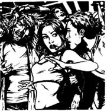
'Great!' said Jude, 'So what's the story then, Johnny? Have some more coffee, and tell us all about it.'
'Well, you know the Tyler Drug Company?' Johnny began. 'They make drugs and medicines.'
'Yes,' Hawker said. 'It's a very big European company. They've got offices in all the big cities.'
'Yeah, that's right,' Johnny said. 'Well, they're taking young people off the streets, and using them for tests.'
Jude laughed. 'Nobody's going to believe that !' she said. 'Drug companies use animals, not people, for their tests. Some new drugs can be very dangerous at first. Nobody wants people to die from a new medicine!'
'It's true!' Johnny said angrily. 'Think about it. All those young homeless people in London. They sleep every night along the Strand, and other streets. Nobody wants to know them, nobody asks questions about them. They've got no home, no family, nothing.'
'But they've got legs,' Hawker said. 'They can run away. '
'You don't understand,' said Johnny. 'Listen. I know, because I was there ! I live on the streets, right? And late one night, along the Strand, they came and took me and some other people—a boy and two girls. They wanted to help us, they said. Hot food, nice beds, new clothes—everything! They took us to this big house—'
'Where?' said Hawker.
'I'm not saying where,' said Johnny.
'And what happened?' asked Jude.
'They gave us food, and new clothes, and beds to sleep in, all right. But we couldn't get out of the house, and men in white coats watched us all the time. And they put drugs in our food.'
'How do you know that?' Hawker asked.
'I felt ill. My eyes went strange, and I couldn't see very well. And one of the girls—she got very ill one night. She screamed and screamed, and the men in white coats came. I was in the next room and I listened through the wall. "This is very strange," one of the men said. "She had 20 grams of Coplas in her dinner tonight. Was that too much, do you think?" "I don't know," said a second man. "We don't want to kill her. Let's try 20 grams again tomorrow, on this girl and on one of the boys. We can't stop this test now. We must get answers quickly." After that, they talked more quietly, and I couldn't hear. But I didn't eat any more food in that house, and the next night I got into an office downstairs and took some papers. Then I broke out of the house and ran away fast.'
'What papers?' said Hawker.
'Papers with Tyler Drug Company's name on them.'
'And where are those papers now?' asked Jude.
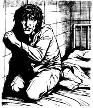
'That's my secret,' Johnny said. 'When the newspaper gives me the money, I'm going to tell them. But I'm not going to tell you. '
* * *
The next day Jude and Hawker flew back to Brussels and went to Arla's office. Arla listened to Johnny Cook's story, but he didn't say anything.
'So, what do we do now?' Jude said. 'Do we look for this big house and—'
Arla picked up his telephone. 'Come back in an hour,' he said. 'Get a coffee or something.'
An hour and three coffees later they went back.
'OK，' said Arla. 'You can forget all about this. Cook's story isn't true.'
Jude stared at him. 'Who told you that?' she said.
'I want to talk to Johnny Cook again,' Hawker said.
'You can't,' said Arla. 'He's dead.'
Hawker looked at Jude, and then back at Arla. 'He was alive yesterday,' said Hawker.
'Well, he isn't alive today. He came out of a club at three o'clock this morning and fell in the river Thames. When they got him out, he was dead.'
'But—' Jude began.
'Forget it, Jude. The file is closed.'
□ □ □
'And was that the end of it?' I asked, when Jude and Hawker finished telling the story.
'Yes,' said Hawker. 'Arla never spoke about it again.'
'And did you believe Johnny's story about the drug company?' I asked.
'Before a company can sell a new medicine to people,' said Hawker, 'there are years and years of tests. They do the tests on animals, of course. But they learn much more quickly from tests on people. There are lots of drug companies, and every company wants to be the first with a new medicine.'
'About five years later,' Jude said, 'the Tyler Drug Company began to sell a new drug, called Coplastin. It was a medicine to stop some kinds of cancer, and it worked. Everybody wanted it. The company made a lot of money—and so the government got a lot of money from the company in taxes. Governments like rich companies and big, fat taxes. They're not very interested in homeless young people sleeping on the streets.'
'So Johnny Cook's story was true,' I said. 'And he didn't fall into the river — somebody pushed him.'
'Of course they pushed him,' said Jude. 'Dead men can't talk, can they?'
club n. a group of people who meet regularly to participate in a particular activity (esp. a sport) or for relaxation. （尤指体育活动的）社团；会社；俱乐部。
drug n. substance used as or in a medicine. 药物；药剂；药材。
weather n. condition of the atmosphere at a certain place and time, with reference to temperature and the presence of rain, sunshine, wind, etc. 天气；气象。
put one's arms around sb.'s neck 搂着某人的脖子。
thirsty adj. feeling thirst. 渴的。
take off remove or detach sth. from (a surface or an edge). 使某物离开或脱离（一表面或边缘）。
dangerous adj. likely to cause danger or be a danger. 有危险的，危险的。
run away suddenly leave sb. /a place; esp. from sb. /a place. 突然离开某人或某处；从某人或某处逃走。
homeless adj. having no home. 无家的。
get out of leave a place, esp. in order to visit places, meet people, etc. 出外走动（尤指参观、会友等）。
kill v. cause death or cause the death of (sb. /sth.). 致死；杀死，扼杀。
break out of escape from a place by using force. 强行逃出某处。
fly back return a place by taking a plane. 乘飞机返回某处。
alive adj. living, not dead. 活着的；没死的。
fall v. come or go down from force of weight, loss of balance, etc.;descend or drop. 落下；跌落。
cancer n. diseased growth in the body, often causing death; malignant tumor. 癌；癌瘤；癌肿。
奥米茄文件第349号：英国，伦敦
奥米茄文件第349号：
英国，伦敦
“伦敦有个青年叫约翰尼·库克，”阿拉说，“18岁左右。他没有家，几乎每晚都泡在俱乐部里，就是那些专为年轻人开设的通宵舞厅。这是他的照片。”
他将照片放在桌上，霍克和祖德看了看。
“还有呢？”霍克问。
“他想向一家报社出卖个故事，”阿拉说，“是有关一个药品公司的。找到他，和他谈谈。他要讲一个什么样的故事呢？我想知道。”
祖德和霍克坐下午的班机从布鲁塞尔飞往伦敦。他们到达之后先去了一家旅馆。
“今晚你准备穿什么呢？”祖德问霍克，“拜托，别再穿那些旧牛仔服了！”
“旧牛仔服怎么啦？”霍克说，“我们要去俱乐部，又不是去里茨饭店赴晚宴。”
“噢，那就换件衬衫吧，你这件脏了。”
“那你帮我洗了呗！”霍克说。
“去你的！”祖德答道。
两人吃过晚饭，又看了一两个小时的电视，之后就出去了。这是个温暖的夜晚，偶尔飘落点儿雨丝。
“地道的伦敦天气。”霍克说。
他们叫了一辆出租车，开车的是个年轻人。
“去哪儿？”司机问。
“我们想去俱乐部，”祖德说，“这周最热闹的地方是哪里？你知道吗？”
“布鲁诺酒吧，”司机回答，“加西亚酒吧也行，就在河下游的岸边。这周人人都去那儿。”
“好，就去那儿！”霍克说。
他们先去加西亚酒吧，然后又赶到布鲁诺酒吧。但他们最后是在一个叫蒙蒂的酒吧找到约翰尼·库克的，而那时已是凌晨两点了。
“就是他，没错，”霍克说，“看他的耳朵你就知道了。”
约翰尼·库克长得又高又瘦，留着一头金色的长发，在他的左耳上有两个黑色的耳环。
“约翰尼！约翰尼·库克！”祖德突然大喊，她跑过去搂住约翰尼·库克的脖子，“嗨，约翰尼！还记得我吗？——我是祖德啊。我们是上星期在加西亚认识的，不记得啦？哦，这是我的朋友霍克。”
“你好，约翰尼。见到你很高兴。”霍克说。
“你好，”约翰尼·库克说。他看了看祖德，“我们在加西亚见过吗？”
“当然啦，”祖德大笑，“我那天和萨拉、帕蒂还有其他几个人在一起，想起来了吗？
“噢。对了，”约翰尼说，“我记起来了。”他四处望了望，问：“她们今天晚上来了吗？”
“没有，今晚就我和霍克来了，”祖德说，“走，去跳舞吧。”
他们跳了两个小时的舞。然后他们和其他大约十个人一起渡过河去了另一个夜总会。那儿的音乐声更嘈杂，舞蹈节奏更快。又跳了两小时的舞以后，霍克感到又热、又累、又渴。
“我老了，”他对祖德说，“这些人难道就不睡觉吗？”
“你才25岁！”祖德说，“谈不上老。你现在还不能停下来，他跟我们越来越熟了，过会儿我们还可以带他去吃早餐。”
七点钟的时候，夜总会关门了，于是祖德和霍克带约翰尼回到了旅馆。祖德拿起电话，要了三份丰盛的早餐，让送到房间来。
霍克脱了鞋。“哦，舒服多了，”他说，眼睛看着约翰尼，“约翰尼，你经常去夜总会吗？你白天干什么？”
“去得不算多吧。我白天通常是睡觉，晚上差不多都在夜总会泡着。”
“那你在哪儿住？”霍克又问。
“露宿街头，”约翰尼回答，“等我有钱了，就弄条船，住在那上面。”
“有钱？”祖德说，“哦，是啊，谁不想有钱呢！”
“而我确实就要有钱了，”约翰尼说，“我有个好故事，明白吗？”他笑了，“我要卖了它。一家报社愿出10万欧元。他们上个月付给我1,000块，我很快就能得到剩下的9万9千块了。”
“太棒了！”祖德赞叹，“约翰尼，是个什么故事呀？再来点儿咖啡，给我们讲讲吧。”
“你们知道泰勒药品公司吧？”约翰尼于是开始讲了，“那儿生产各种药品。”
“知道，”霍克回应道，“那是个欧洲的大公司。它在各大城市都有代理处。”
“对，对，”约翰尼说，“嗯，就是它搜罗浪迹街头的青年，并在他们身上做试验。”
祖德笑出声儿来。“没人会相信你！”她说，“医药公司用动物做试验，不会用人的。一些新药会有毒副作用，服用它们可能会出人命，没人想那样做！”
“是真的！”约翰尼生气地嚷嚷起来，“想想伦敦那些无家可归的年轻人吧。每晚他们都露宿在斯特兰德大街还有其他几条街上，无人过问。他们没有家也没有亲人，一无所有。”
“可他们有腿呀，”霍克说，“他们可以跑嘛。”
“你根本不明白，”约翰尼说，“听着，我了解这个是因为我去过那儿！我住在大街上，对吧？一天深夜，在斯特兰德大街，他们来了，把我和其他几个人——一个男孩儿和两个姑娘——带走了。他们说，他们要帮我们。有热饭热菜，舒服的床铺，新衣新裤——应有尽有！他们把我们带到一幢大房子里——”
“在哪儿？”霍克问。
“不告诉你们。”约翰尼说。
“后来呢？”祖德问。
“他们给我们东西吃，还给新衣服穿，还让我们整晚都睡在床铺上。但我们不能离开那房子，身穿白大褂的男人一直监视着我们。他们在我们的饭里放了药。”
“你怎么知道的？”霍克问。
“我感觉不对劲儿。我的眼睛出问题了，看不清东西。两个姑娘中的一个——一天夜里病得很厉害，她不停地尖叫。穿白大褂的男人来了。我刚好住在隔壁。我耳朵贴着墙。‘这种情况很奇怪。’其中一个人说，‘她今天的晚饭里有20克的科普拉斯，难道放得太多了吗，你觉得呢？’‘不知道，’另一个说，‘我们也不想把她弄死。明天我们还用20克的剂量，仍旧给这个女孩儿，再找个男孩儿试试。我们现在决不能停止这个试验，必须尽快得出结果来。’之后，他们就压低了声音，我也就听不清了。但我再没在那房子里吃过任何东西。第二天晚上，我设法进入楼下的一间办公室，拿了几份文件。后来，我飞快地逃离了那幢房子。”
“什么文件？”霍克问。
“上面印着泰勒药品公司字样的文件。”
“现在那些文件在哪儿呢？”祖德问。
“这是个秘密，”约翰尼回答，“报社给我钱，我才会告诉他们。不过我是不会告诉你们的。”
＊ ＊ ＊
第二天，祖德和霍克飞回布鲁塞尔，赶到阿拉的办公室。阿拉听了约翰尼·库克的故事，但并没有说什么。
“那我们现在做什么？”祖德问，“是不是去找那幢大房子并且——”
阿拉拿起电话。“一小时后再回来，”他说，“去喝杯咖啡什么的。”
他们喝了三杯咖啡，一个小时就过去了。他们又回到了阿拉的办公室。
“好了，”阿拉说，“忘了库克的故事吧，那是编造出来的。”
祖德盯着他。“谁告诉你的？”她问。
“我要再找约翰尼·库克谈谈。”霍克说。
“来不及了，”阿拉答道，“因为他已经死了。”
霍克看了看祖德，又转向阿拉。“他昨天还活着呢。”霍克说。
“嗯，他今天死的。今晨3点他从一家夜总会出来，掉进了泰晤士河。把他捞上来时，他已经死了。”
“可是——”祖德还想说些什么。
“祖德，忘了这事吧。文件就此收尾。”
□ □ □
“这就是结局吗？”祖德和霍克讲完了故事，我问道。
“是啊，”霍克回答，“阿拉再也没提起过这件事。”
“那你相信约翰尼所讲的关于药品公司的故事吗？”我问他。
“一个公司在出售一种新药之前，”霍克说，“需要做很多年的药物试验，当然，他们拿动物做试验。可是，如果用人来做试验他们就能大大缩短试验进程。药品公司很多，而每个公司都想首先研制出一种新药来。”
“大概是那件事发生后的第五年，”祖德接着说，“泰勒药品公司的一种叫科普拉斯酊的新药上市了。它能医治某些癌症并且效果显著。所有人都想买这种药，因而药品公司挣了大把的钱——政府也由此获得了大笔的税收。政府喜欢的是有钱的公司和巨额的税收，至于那些露宿街头无家可归的青年，政府是不感兴趣的。”
“这样看来，约翰尼·库克的故事是真的了。”我说，“他并非失足落水——而是有人把他推了下去。”
“当然是他们干的，”祖德说，“杀人灭口嘛！”
OMEGA FILE 451: Loch Ness, Scotland
OMEGA FILE 451
Loch Ness, Scotland
'I want you to take the next plane to Scotland,' said Arla. 'Then get up to Loch Ness. '
'Oh, great,' said Hawker. 'Are we looking for the Loch Ness monster—old Nessie?'
Jude laughed.
'Don't laugh,' said Arla. 'You are looking for a monster. '
'Oh, come on, Arla,' Jude said. 'You don't mean that. '
'This photo came by email from Edinburgh,' said Arla. 'Look...' He turned to his computer and opened a file. 'It's a night-time photo and not very good.'
Hawker and Jude stared at the photo on the computer screen. They could see water, and something big and grey, half in and half out of the water.
'It's got arms and a head,' said Hawker. 'But what is it?'
'It kills sheep, cats, and dogs,' Arla said. 'And perhaps small children next. People in Fort Augustus are screaming at London, and London is screaming at us. Go and find it. '
'What do we do with it when we find it?' asked Jude.
'Kill it,' said Arla. 'Before it kills you.'
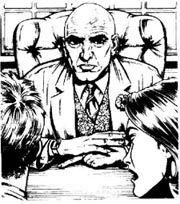
Hawker and Jude waited for a minute, but Arla turned away and began to read his emails.
'Are you telling us everything, Arla?' asked Hawker.
'Of course.' Arla put his hands on the table. There were only two fingers on his left hand. 'I always tell you everything. You know that.'
'Huh!' said Jude.
* * *
They took a plane to Inverness, then drove along the side of Loch Ness to Fort Augustus. It was a grey November day—grey sky, grey water, grey hills.
Hawker looked across the loch. 'It's easy to believe in monsters here,' he said. 'Loch Ness is about 200 metres deep. The third deepest lake in Europe. Did you know that? A hundred monsters could live down there.'
'How are we going to find this thing?' asked Jude.
'Talk to people in Fort Augustus first,' Hawker said. 'Then take it from there.'
They talked to people in their hotel, and to people in the streets in Fort Augustus. Everybody had a lot to say.
'It killed Mrs Fraser's dog,' said one woman. 'She has a house down by the water. The monster came into her garden one night. Her little dog went to look, and the monster killed him—just like that. '
'Killed six of my brother's sheep,' said a man called Dugald. 'He's very angry about it.'
'Can we meet your brother?' asked Jude. 'Ask him some questions?'
Dugald's brother, Archie, lived at Invermoriston, about nine kilometres up the loch. He was a big man, with black hair and blue eyes. He was not very friendly at first.
'Who are you?' he asked. 'Are you army people?' '
'No,' said Hawker. 'Why do you ask that?' '
There's an army laboratory in the hills above the loch. Lots of strange people there. And lots of boats on the loch at night. Coming and going.'
'Mmm. Interesting,' said Jude. 'But tell us about the Loch Ness monster and your dead sheep.'
'It wasn't Nessie. Nessie doesn't kill sheep,' Archie said. 'This... thing... broke their necks.'
'Did you see it?' asked Hawker.
'Well, I saw something big, but it moved very fast. It was back in the loch in seconds. And it was nearly dark.'
'Right,' said Hawker. 'Now, we'd like to look at your dead sheep, please. And then we need a boat. Where can we get a fast boat, Archie?'
'What do you want a boat for?'
'We're going to catch this thing,' said Jude, 'and stop it killing your sheep.'
For the next four days Hawker and Jude went up and down Loch Ness in Archie Campbell's boat. They talked to everybody around the loch. 'When you see this monster, please ring us. Any time. Day or night. Our mobile phones are always turned on.'
They slept a little in the day, and were out most of the night in the boat, with their guns, cameras, mobile phones, a big flashlight, and litres of hot coffee. Once they thought they saw the monster just north of Invermoriston. Another night a call came from a little place called Foyers. They got there at six in the morning. It was dark and cold, and everything was very quiet. They sat in the boat, looking up and down the loch.
'Look,' whispered Hawker. 'Down there, by the trees.'
Fifty metres away there were some tall trees by the side of the loch. There were some sheep under the trees—and something big and dark. Suddenly the sheep began to run.
'Start the engine,' said Hawker. 'Let's get down there.'
When they got to the trees, they found five sheep with broken necks, but no monster.
'It just kills, and goes away again,' said Jude. 'Horrible. '
The next night they were near Urquhart Castle when they saw two other boats. It was three in the morning.
'Those boats again!' said Hawker. 'We heard their engines last night. And the night before. Who are they? Let's go and see.'
Quietly, their boat moved nearer. There were four men in each boat—men in grey, young men with hard faces. They watched Hawker and Jude, and said nothing.
'Hullo,' said Jude, with a friendly smile. 'Who are you?'
A tall man in the nearest boat answered. 'Army,' he said. 'Who are you? What are you doing out here at this time of night?'
'We're visitors?' said Jude. 'Looking for Nessie, of course. What are you doing?'
'There's no monster in this loch,' said the tall man. 'Go back to your hotel and go to bed.' The two army boats moved away, down the loch.
'Nice,' said Hawker. 'Very friendly.'
Arla phoned them every morning. 'Get on with it,' he said. 'Before this thing kills someone. '
'We can't get near it,' Jude told him. 'This loch is thirty-six kilometres long and two kilometres across. There are only two of us, and we're not getting any sleep.'
'You can sleep later,' said Arla. 'Just catch this thing.'
'We met some army people last night,' Jude said. 'What are they doing here? What do they do at their laboratory?'
The phone went quiet. Then, 'What laboratory?'
'The army laboratory in the hills above Loch Ness.'
The phone went dead. 'Well, well,' Jude said to Hawker. 'He doesn't know. Or he's not telling.'
The monster came out of the loch and killed sheep nearly every night. Everybody around the loch wanted to help Hawker and Jude, and their mobile phones never stopped ringing. A lot of people thought the monster was Nessie, but Archie knew it wasn't.
'Nessie never killed anything in fifteen hundred years,' he said. 'This is something different, and it's going to start killing people soon. Look, you need some sheep.'
'Sheep?' said Hawker. 'Do you mean sleep?' He was very tired after ten nights on the loch.
'Of course!' said Jude. 'Clever Archie. Can you get us some old sheep then? Or perhaps we can use Hawker. He's nearly an old sheep by now.'
'Oh, shut up,' said Hawker.
They found a good place between Invermoriston and Urquhart Castle with some trees by the water, and took their six old sheep there. For three nights they watched, but no monster came. The men in grey were out every night too. They were never far away from Hawker and Jude, but never came to speak to them.
On the fourth night Hawker and Jude arrived at their sheep place later than usual. It was a warm, rainy night—soft Scottish rain that never stops.
When they turned the engine off, everything was quiet—just the rain whispering on the loch. Hawker got out of the boat and stood with the flashlight, watching and listening. Jude sat in the boat, with her gun in her hand.
'Where are the men in grey?' whispered Hawker.
'Don't know,' Jude whispered back. 'Behind us, I think. '
Then everything happened at once. There was a sudden noise of boats' engines behind them, and at the same time something moved in the water in front of them. A head and two long arms came out of the water.
'Light!' shouted Jude. 'Quick!'
Hawker turned on the flashlight, and at once the monster stood up and ran at Hawker through the water, its long arms going for Hawker's head.
'Get down, Hawker!' screamed Jude. In a second Hawker was under the water, and then came the sound of Jude's gun—once, twice, and then a third time.
When the monster stopped moving, Hawker and Jude went to look at it. It was a greeny-black colour, bigger than a man, and with very long arms and legs. It had a small head on a long neck. It was a strange, horrible thing.
A minute later, the men in grey arrived in their two boats. They got out and came to look at the dead monster.
'Oh dear,' the tall man said. 'Poor old Nessie.'
'That', said Hawker, 'is not Nessie. So what is it?'
'Visitors, aren't you?' said the tall man. 'Where from?'
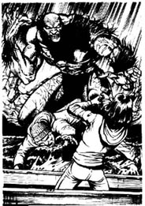
Hawker and Jude stared at him and said nothing. Then Jude took something out of her pocket and held it up, in front of the tall man's eyes.
He looked at it. 'Oh,' he said. 'I see. EDI. Don't see many of those. OK, what do you want to know?'
'What—is—that—thing?' said Jude.
The tall man looked unhappy. 'It is, or it was, one of the army's new fighters. It got away from our laboratory, and we just couldn't catch it.'
'But it was alive... a—a living thing,' said Hawker.
'You can make a lot of living things in a laboratory these days,' said the tall man. 'Genetic engineering is getting very clever. This fighter can run all night, live under water, see in the dark. But it's new. We haven't got it right yet.'
'And it's programmed to kill anything, is it?' said Jude.
'No, no,' the tall man said quickly. 'Not this one. This one just kills small animals with four legs—sheep, dogs, cats, things like that.'
'Well,' said Jude, 'that is nice to know.'
'And where are the other monsters?' asked Hawker. 'For killing men, women, and children—things like that.'
The tall man smiled. 'Can't answer that, I'm afraid. Talk to your people in Brussels. Well, we must get back. Lots to do, you know. Thanks for your help. Bye. '
The men in grey put their dead monster in one of the boats and went away up the loch into the dark and the rain.
□ □ □
'And what did Arla say about it all?' I asked.
'He was so angry!' Hawker said. 'He went crazy! He didn't know about the monsters, you see. Or the laboratory. The army didn't tell anyone in Brussels.'
'And Arla liked to know everyone's secrets,' said Jude.
'Did the army make any more monsters?' I asked.
'Not in Scotland,' said Hawker. 'The British army closed their laboratory after that. The Americans and the French made some monsters years later. They were smaller, like big cats, but with eight legs.'
'Where are they now?' I said. 'You don't hear anything about them.'
'Of course not,' said Jude. 'People don't want to hear about monsters.'
'They're in Antarctica. Or in a place deep under the ground,' said Hawker. 'Nice and secret. Just waiting for the next war.'
'And so there isn't a Loch Ness monster, and never was one,' I said.
'Nessie?' said Jude. She looked me in the eyes and did not smile. 'Of course there's a Loch Ness monster. She's a blue-grey colour, has a small head, a very long neck, and is about fifteen metres long... Go and look at all the photos of her on the Internet.'
loch n. (Scot. often in names) lake. （苏格兰，通常用于地名）湖。
get up to reach. 达到。
screen n. blank surface, esp. an a TV or a computer monitor, on which pictures or data are shown. 屏幕，荧光屏。
believe in feel sure of the existence of sth. /sb. 相信某人或某事的存在。
a lot large number or amount. 大量；许多。
friendly adv. behaving in a kind and pleasant way; acting like a friend. 和蔼可亲地；朋友般地；友爱地。
laboratory n. room or building used for (esp. scientific) research, testing, experiments, etc. 实验室。
whisper v. to speak (words) very quietly, using the breath but not the voice. 悄悄地说；低语；耳语。
look up and down examine sb. /sth. in a careful or contemptuous way. 上下仔细或轻蔑地打量。
phone v. telephone sb. 给某人打电话。
get on with...取得进展；继续（做某事）。
nearly adv. not completely; almost; very close to. 不完全地；几乎；很接近地。
shut up stop talking. 闭嘴。
arrive at reach (a place), esp. at the end of a journey. 到达，抵达（某地）（尤其是指旅途的终点）。
turn off stop the flow of (electricity, gas, water, ect.) by turning a knob, tap, etc. 截断（电流，煤气，水等）；关掉；关上。
at once immediately; without delay. 立刻；马上。
horrible adj. causing horror. 可怕的；令人恐怖的。
stare at look (at sb. /sth.) with the eyes wide open in a fixed gaze. 对（某人或某事）瞪着眼凝视。
hold sth. up show sth. 展示某物。
crazy adj. insane. 疯狂的；精神失常的。
wait for (sb./sth.) stay where one is, delay acting esp. for a special time or until sb. or sth. comes or until sth . happens. 等候；等待。
奥米茄文件第451号：苏格兰，尼斯湖
奥米茄文件第451号：
苏格兰，尼斯湖
“我要你们坐下一班飞机去苏格兰，”阿拉说，“然后赶往尼斯湖。”
“噢，太好了，”霍克说，“是让我们去找尼斯湖怪兽——老内西？”
祖德笑了起来。
“别乐了，”阿拉说，“你们真的是要去找一个怪物。”
“哦，行了，阿拉，”祖德说，“你说的不是真的吧？
“这张照片是从爱丁堡用电子邮件发过来的，”阿拉说，“看……”他转向电脑，打开了一个电子文档。“这是晚上照的，不太清楚。”
霍克和祖德一起看着电脑屏幕上的照片。他们看见了水，还看见一个灰乎乎的庞然大物从水中探出半个身子来。
“它有胳膊，还有一个脑袋，”霍克说，“可它是什么呀？”
“它杀羊、杀猫、杀狗，”阿拉说，“或许就要杀小孩了。奥古斯都堡人向伦敦政府求助，伦敦政府又向我们求助。去找到它。”
“找到了怎么处置它呢？”祖德问。
“杀掉它，”阿拉说，“在它杀死你们之前。”
霍克和祖德又等了一会儿，但阿拉却转过身去看电子邮件了。
“阿拉，你把所有的情况都告诉我们了吗？”霍克问。
“当然。”阿拉把手放在桌子上。他的左手只有两个指头，“你们知道，我什么时侯都会向你们说明一切的。”
“嗬！”祖德应道。
＊ ＊ ＊
他们乘飞机到因弗内斯，然后开车顺着尼斯湖的岸边去奥古斯都堡。那是阴霾的11月的天气——灰色的天空，灰色的湖水，灰色的山。
霍克放眼朝湖面望去。“的确很容易相信这儿有怪物。”他说，“知道吗？尼斯湖有大约200米深，其深度在欧洲排第三。说100个怪物躲在这儿也有人信。”
“我们怎么找到它呢？”祖德问。
“先和奥古斯都堡人谈谈，”霍克回答，“然后再抓它。”
他们找旅馆的人谈了谈，又和奥古斯都堡大街上的人谈了谈。一说起怪物，每个人似乎都有一堆话要说。
“它吃了弗雷泽太太的狗。”一个妇女说，“她住在湖边的一幢房子里。一天夜里怪物闯入她的花园，她的小狗出来咬它，怪物就把它弄死了——就是那样。”
“我兄弟的六只羊被它弄死了，”一个叫杜格尔德的人说，“为此他很恼火”。
“我们能见一见你兄弟吗？”祖德问他，“问他点儿问题，可以吗？”
杜格尔德的兄弟阿奇住在距湖九英里处的因弗莫利斯通。他是个大块头，长着黑头发，蓝眼睛。一开始他并不友好。
“你们是什么人？”他问，“是当兵的吗？”
“不是，”霍克回答，“你为什么要问这个？”
“湖上面的山里有一个军事实验室，那儿有许多奇怪的人。一到夜里湖上就有许多船，来来往往。”
“嗯，挺有意思。”祖德说，“再给我们讲讲尼斯湖怪兽和你死掉的羊吧。”
“那可不是内西，内西才不会杀羊呢，”阿奇说，“那个……东西……扭断了羊的脖子。”
“你看见它了？”霍克问。
“喔，我看见一个庞然大物，但它移动的速度很快，几秒钟时间它就钻回了湖里。那时天还未黑透。”
“知道了。”霍克说，“现在请让我们看看你那些死羊吧。然后我们还需要一条船。阿奇，知道到哪儿能弄条快船吗？”
“你们要船干吗？”
“我们要抓这怪物，”祖德说，“以免它再杀死你的羊。”
接下来的四天里，霍克和祖德乘阿奇·坎贝尔的船在尼斯湖上转来转去。他们和每个居住在湖畔的人攀谈。“见到怪物就请打电话通知我们。白天黑夜，什么时侯都行。我们的手机会一直开着的。”
他们白天睡一会儿，夜间的大部分时间乘船出去，带着枪、照相机、手机，一只大手电筒和几升热咖啡。一次，在因弗莫利斯通北部，他们以为自己见着怪物了。另有一天夜里，他们接到一个电话，是从一个叫福耶斯的小地方打来的。他们早上6点赶到那儿时，天还是黑的，天气很冷，四周静悄悄的。他们坐在船上，在湖上四处张望。
“看，”霍克轻声说，“那儿！树丛边上。”
50米开外的湖边有一些高大的树木，树下有一群羊——还有一个庞大的黑影！突然羊群跑动起来。
“发动马达，”霍克说，“我们赶过去。”
当他们赶到树林时，只发现五只被扭断脖子的羊，但没看见什么怪兽。
“它杀死它们就走了，”祖德说，“太可怕了。”
第二天夜里，他们在厄克特城堡附近看见另外两只船。当时是凌晨3点钟。
“又是那些船！”霍克说，“昨天夜里我们听见它们发动机的声音。前天晚上也听到了。船上是什么人呢？我们去看看吧。”
他们悄悄地把船移近了，看见每只船上有四个人——四个身穿灰色衣服神情严肃的年轻人。他们望着霍克和祖德，一言不发。
“你们好！”祖德友好地微笑着说，“你们是干什么的？”
近处的那艘船上一个高个儿男人回答说：“军人。”他说道，“你们呢？这个时候你们在这儿做什么？”
“我们是观光的，”祖德说，“当然，是找内西的。你们在做什么呢？”
“这湖里没有怪兽，”高个儿男人说，“回你们的旅店睡觉去吧。”两只军用船开向湖的深处去了。
“不错，”霍克说，“真够友好的。”
阿拉每天早上都和他们通电话。“继续找。”他总是说，“在它杀人之前找到它。”
“我们无法靠近它，”祖德对阿拉说，“湖面有36公里长、两公里宽，而我们只有两个人，不让我们睡觉了吗？”
“觉以后再睡吧，”阿拉说，“先找到这傢伙。”
“昨晚我们遇到一些当兵的，”祖德说，“他们在这儿干什么？他们在他们的实验室里干什么呢？”
电话那端沉默了一会儿，然后问：“什么实验室？”
“尼斯湖边山里的军方实验室。”
电话那端又不作声了。“哦，哦，”祖德对霍克说，“要么他不知道，要么他不想告诉我们。”
怪物几乎每晚都要从湖里出来杀羊。住在湖边的每个人都想帮霍克和祖德，他们的手机响个不停。许多人认为这个怪物就是内西，可阿奇却认为不是。
“在这1,500年里，内西从不伤害任何东西，”他说，“这个东西就不一样。它就要开始杀人了。对了，你们得弄几只羊来。”
“羊？”霍克说，“你是说睡觉吧？”在湖上转了十个晚上，他已疲惫不堪了。
“当然了！”祖德回答，“你太聪明了，阿奇。那你能为我们弄几只老羊吗？没准儿霍克也能算一个。他现在差不多是一只老羊了。”
“行了，你给我闭嘴！”霍克说。
他们在英弗莫利斯通与厄克特城堡之间发现了一个水边有树林的好地方，于是就把他们的六只羊带到那儿去了。他们接连观察了三天都不见怪物的踪影。穿灰衣服的男人每晚也会出现，就在离霍克和祖德不远的地方，但从不和他们交谈。
第四天夜里，霍克和祖德比平时晚一些来到羊群那里。那是个温润的雨夜——天空一直飘着苏格兰的绵绵细雨。
他们关掉引擎后，四周便一片寂静——只听见雨滴落在湖面上发出的“沙，沙”的声音。霍克下了船，拿着手电筒站在那儿静静地看着、听着。祖德坐在船上，手里拿着枪。
“穿灰衣服的人哪儿去了？”霍克悄声问道。
“不知道，”祖德轻声回答，“我想可能在我们后面。”
一切都在瞬间发生了。他们身后突然响起船发动引擎的声音，同时他们看见有个东西在面前的水里移动，接着一个头和两个长胳膊露出了水面。
“用手电照一下！”祖德大叫，“快！”
霍克拧亮手电，怪物突然在水中直立起来，朝霍克扑过去，长胳膊伸向他的头。
“霍克，低头！”祖德尖叫。霍克一下子就钻到了水里，然后是祖德开枪的声音——一声，两声，三声。
怪物不动了，霍克和祖德走过去看它。它的皮肤是墨绿色的，比人类高大，胳膊和腿极长，它那长脖子上长着一个小脑袋，看起来怪异恐怖。
一分钟以后，穿灰衣服的人开着那两条船过来了。他们下了船，看着怪物的尸体。
“天哪！”高个儿男人说，“可怜的老内西。”
“这个东西，”霍克说，“不是内西。它究竟是什么？”
“你们就是那两个来旅游的，对吗？”高个子说，“从哪儿来的？”
霍克和祖德盯着他，并不作声。祖德从口袋里拿出一件东西，把它举到高个子眼前。
他看了看。“哦，”他说，“原来是EDI呀。我还没见过多少EDI呢。好吧，你们想知道什么？”
“那——是——什么——东西？”祖德说。
高个子看起来不太高兴。他说：“它是，它曾是军方新研制的一种武器，从我们的实验室里逃出来了。我们一直没抓住它。”
“可它是活的……一个——一个生物呀。”霍克说。
“现在一个实验室能生产出许多这样的活物来，”高个子说，“生物工程越来越先进了。它能跑一整夜，生活在水下，有夜视眼。但它刚研制出来，我们还没有进一步完善它。”
“它被生产出来杀一切生物的，是吗？”祖德问。
“不，不，”高个子马上说道，“这只不是。它只杀四条腿的小动物——羊、狗、猫等等诸如此类的东西。”
“呵，”祖德说，“真是个好消息。”
“其他怪物在哪儿呢？”霍克问，“那些专门造出来杀男人、女人和儿童——诸如此类的？”
高个子笑了笑说：“恐怕我无可奉告。和布鲁塞尔那边说说吧。好，我们得回去了，还有许多事要做。谢谢你们帮我们杀了它。再见。”
灰衣人把死了的怪物抬到其中一条船上，然后两只船向湖那边开去了，最后消失在漆黑的雨夜里。
□ □ □
“阿拉对此有何看法？”我问。
“他非常生气！”霍克说，“他简直气疯了！要知道他对怪物和实验室的事一无所知。军方没有向布鲁塞尔透露任何消息。”
“而阿拉却想知道一切秘密。”祖德说。
“军方后来又制造更多的怪物了吗？”我问。
“不在苏格兰了，”霍克说，“英国军方自那以后就关闭了他们的实验室。几年后美国和法国造出了一些怪物。它们个头小，像大型猫科动物，却有八条腿。”
“它们现在在哪儿？”我问，“你们就再没听到什么消息？”
“当然没有，”祖德回答，“人们总不爱听怪物的事儿。”
“它们在南极，或在地下深处。”霍克说，“悄悄地、安静地待在那儿，等待下一次战争的爆发。”
“这么说，没有尼斯湖怪兽了，而且从来也没有。”我说。
“内西？”祖德盯着我的眼睛，严肃地说，“当然有尼斯湖怪兽了。她有着墨绿色的皮肤，小小的脑袋，极长的脖子，身长大约有15米……去网上看她的照片吧。”
OMEGA FILE 522: Galápagos, Ecuador
OMEGA FILE 522
Galápagos, Ecuador
'Got your sun hats?' said Arla.
'Why?' asked Jude. 'Where are we going now?'
'South America,' Arla said.
'Big place,' said Jude. 'How about Chile? I like Chile.'
'No, it's Ecuador. You're going to the Galápagos Islands, a thousand kilometres out in the Pacific Ocean. '
'Oh, right,' Hawker said. 'Are you going to tell us why?'
Arla looked unhappy. 'There's something strange going on. EDI is getting emails every day from the Galápagos. They're all about Isabela Island and they all say things like this.' He gave Hawker and Jude a piece of paper.
* * * IMPORTANT NEWS* * * IMPORTANT NEWS* * *
A new time is coming for our planet.
The first visitors are now on Isabela Island, Galápagos.
Don't fight them. Don't be afraid of them. Be friendly.
Tell your government now.
Hawker and Jude looked at Arla, and then laughed. 'There are a lot of crazy people out there on the Internet,' said Jude. 'You don't believe this one—do you?'
'Perhaps it's crazy, and perhaps it's not,' said Arla. 'But when we email back with questions, they don't answer. The Americans are watching the island by satellite, but they don't want to tell us why. There are two Australian ships going there. The Mexicans are getting very excited, and the Ecuadorians are saying nothing... Something is happening on Isabela. What is it? We want to know. '
* * *
From Brussels to the Galápagos is a long way. Hawker and Jude took a plane to Cuba, a second plane to Ecuador, then a third plane out to Baltra Island, in the Galapagos. When they got out of the plane, a wall of hot air hit them.
'Whew,' said Hawker. He put on his sun hat quickly.
They went across to Santa Cruz Island and down to Puerto Ayora. There they found a boat, the Sea-Lion, to take them to Isabela, about 90 kilometres away. At first, the boatman, Gonzalo, did not want to take them.
'My boat can take ten people,' he said. 'It's a very good boat, but very expensive for only two people.'
Jude smiled at him. 'Not for two rich people.'
'Rich?' said Hawker. 'It's not our money—ouch!'
Jude hit him hard on the arm. 'We're on holiday,' she told Gonzalo. 'We want to see the giant tortoises on Isabela.' She looked at Hawker. 'Don't we?'
'Er, yes. That's right,' said Hawker quickly. 'We're very interested in the giant tortoises.'
On the way to Isabela Island Jude read a book about the Galápagos, and Hawker watched the sea. 'Isabela is a very young island,' Jude told him. 'And it has— listen to this ! —six volcanoes. One erupted only two years ago.'
'Oh, that's great!' said Hawker. 'Crazy emails, strange visitors in the middle of the Pacific, and now erupting volcanoes!Thank you, Arla!'
Not many people lived on Isabela, and Puerto Villamil was usually a sleepy place. But when the Sea-Lion arrived, there were about fifty people down by the sea. There were two small boats, and on them Hawker and Jude could see chairs and tables, beds, boxes and bags, and a bicycle.
Gonzalo called out in Spanish to the people on the boats, then turned to Hawker and Jude. 'Lots of people are leaving Isabela,' he said. 'They are afraid.'
'Afraid of what?' asked Jude. 'Go and talk to them, Hawker. Your Spanish is better than mine.'
Hawker came back half an hour later. 'You're not going to believe this,' he told Jude. 'The people here say there's a spaceship on Isabela. It came down ten days ago, right down inside Volcano Alcedo. And it's still there.'
'How do they know that?' said Jude.
'There's an Australian, Dr Jim Miller, up on Alcedo. He works here, studying giant tortoises. He saw the spaceship, and now he's waiting for the visitors to come out.'
'So the "visitors" in those emails are extraterrestrials. ETs. Little green men from another planet. Oh dear,' said Jude. 'Can we go home now, Hawker?'
Hawker laughed. 'No, we can't. We climb Volcano Alcedo,' he said. 'Talk to Dr Miller. Say hello to the ETs.'
'Oh dear,' Jude said again. 'I was afraid of that.'
Gonzalo took them in the Sea-Lion up to Shipton Cove. There, very early the next morning, Hawker and Jude began their climb up the volcano.
'There is a path,' Gonzalo told them, 'but it is five hours to the top and hard climbing. And very, very hot. You must carry water—two litres for one person for one day. You must sleep at the top and come down tomorrow— but not when the sun is high in the sky. And be careful, please !'
'Careful of the spaceship visitors, you mean?' said Jude.
'I don't know about spaceships,' smiled Gonzalo, 'but Volcano Alcedo is always a little excited — she is always doing something new.'
It was a very hard climb. After two hours, they stopped under some trees. They drank some water and looked out over the blue sea. The black volcanic rocks under their feet were hot from the sun.
'It's so beautiful here,' said Jude.
'Mmm. Yes and no,' said Hawker. Then, 'Hey, Jude! Look !That animal, over there by that rock. What—is—it?'
'Oh, wow!' whispered Jude. 'It's an iguana—a Galápagos iguana. Isn't he wonderful?'
The iguana stared at them with its hot orange eyes, and did not move. Its body was about a metre long, and an orange-yellowy colour.
'It looks about a thousand years old,' said Hawker. 'A very strange animal.'
'Everything about this island is strange,' said Jude.
They climbed and climbed, and the sun got hotter and hotter. After three more hours they came to the top, and looked down into the great crater of Alcedo, two hundred metres deep and seven kilometres across. To the north and the south they could see more volcanoes, and across the sea to the west the island of Fernandina—but they could not see Dr Miller or his camp.
'We need to go round the crater to the south,' said Hawker. 'It's another two hours' walk, the villagers said. '
It was hard walking over the black lava rock, and once Hawker nearly fell. Jude caught his arm.
'Don't break a leg here,' she said. 'I don't want to carry you back down to the boat.'
'Why not?' said Hawker. 'I carried you home once.'
'We weren't on top of a volcano then,' said Jude.
At last they saw Dr Miller's camp, and ten minutes later they arrived. Dr Miller was short, very brown, and angry.
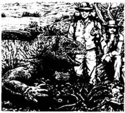
'Go away!' he shouted. 'You're Americans, aren't you?'
'No, we aren't,' said Hawker. 'We're European. How do you do, Dr Miller?'
'What are you doing here?' he said angrily.
'We'd like to talk to you,' said Jude quietly. 'About the spaceship down in the crater. Why are you so angry?'
'Because nobody listens to me!' said Dr Miller. 'Nobody believes me! The Americans say, "Oh, crazy man!" The Australian government says, "Get some sleep!" What can I do? Something very important is happening on this planet, and nobody is listening !'
'Well, we're here now, and we're listening,' Jude said.
Dr Miller looked at them, 'Who do you work for?'
'Europe,' said Hawker. 'Europe is very interested in this spaceship. Please tell us about it. '
'Ah, the emails did get through, then,' said Dr Miller.
'Who did the emails come from?' asked Hawker.
'Ecuadorian friends,' said Dr Miller. 'Over on Santa Cruz. Look, I've got some beer here. You want one?'
They sat on the black lava rocks under the hot sun, and drank hot beer. Below them clouds of smoke and steam moved this way and that way across the crater. And was there, under those clouds, a spaceship from another planet?
'Sometimes I think I can see it down there,' said Jim Miller, 'but mostly I can't. It's a great white thing, and long legs came out of it when it came down.'
'But why here, Jim?' said Jude. 'Why into a volcano?'
'Who knows?' said Jim. 'Perhaps they like hot places. Perhaps they need something from the hot lava.'
'And why are you angry with the Americans, Jim?' Hawker asked. 'I know their beer's no good, but...'
'They watched this spaceship on their satellite. I know they did. They know it's here, but they don't want the world to know. They don't want people like you and me to meet any extraterrestrial visitors. Oh no! They want it all to be a big secret. Then they can be top dog. '
Just then there was a sudden noise, a BOOM deep below the ground. 'What... what was that, Jim?' asked Jude.
'Oh, Alcedo does that all the time,' said Jim. 'Then hot water comes up, and steam, dust—sometimes a little lava, but not much. That's why there are always clouds in the crater. You can never see anything down there.'
'Can we climb down into the crater?' asked Hawker.
'Are you crazy? It's dangerous down there!' Jim said.
All evening Hawker and Jude stared down into the crater, but they could see nothing through the clouds of steam and dust. Just before the sun went down, Hawker saw something near the top of the crater and shouted to Jude, but it was only two of the giant tortoises. They came slowly past the camp and went away down the other side of the volcano. Later, four more came past, going the same way, moving slowly and quietly over the black rocks.
'They're very strange animals!' said Jude.
Hawker and Jude did not sleep much. The rocks were hard, and below them they heard again and again the deep BOOM of the volcano. Late in the night they turned their radio on. It was very noisy, but through the noise they could hear a voice from Santa Cruz. Hawker listened hard.
'They're talking about Volcano Alcedo!' he said. 'They think it's going to erupt in the next twenty-four hours!'
Jude sat up. 'Oh no! We're seven hours away from the boat. Let's get moving! Go and call Jim.'
But Jim Miller did not believe Santa Cruz radio. 'It's the Americans again,' he said. 'They want us all to go away.'
'Please come with us, Jim,' said Jude. 'Please. You can come back in a day or two. '
'You two go,' said Jim, 'but I'm staying right here, and watching that spaceship. '
It was a hard climb down. When they got to the sea, they saw Gonzalo with the little boat. 'Hurry!' he shouted. 'Did you hear on the radio? Alcedo's going to erupt!'
Quickly, they went out to the Sea-Lion and climbed up onto the boat. 'Go! Go! Go!' Gonzalo shouted to his men, and before long the Sea-Lion was a kilometre out at sea.
Two hours later Volcano Alcedo erupted. There was asudden great BANG! —and then clouds of dust flew up into the sky. Red-hot lava came out of the volcano's sides and ran down to the sea. The noise did not stop, and with every bang, rocks flew hundreds of metres up into the sky, then fell slowly back down to the ground. For hours the night sky was filled with great flowers of red and orange light.
It was a beautiful, and a terrifying thing to watch.
□ □ □
'What happened to Dr Miller?' I asked.
'Poor Jim went to the great spaceship in the sky,' Jude said. 'Five hundred metres of red-hot lava fell on top of him.'
'And was there a spaceship in the volcano?'
'No', said Jude.
'Yes,' said Hawker.
He looked at Jude, and they laughed. Then Jude looked at me. 'What do you want to believe?' she asked. 'They weren't very clever extraterrestrials, were they?—sitting there in their spaceship in an erupting volcano!'
Hawker smiled. 'Ah, but perhaps the spaceship left just before the volcano erupted. Gonzalo and I saw something in the clouds of dust—a white light, moving very fast, faster than the dust. It went up very high.'
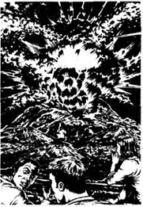
'Well, I didn't see anything,' said Jude. 'And that's because there wasn't anything in that volcano!'
Hawker looked up into the blue Greek sky. 'How do we know?' he said slowly. 'One day someone, or something, is going to visit us from out there. Perhaps that was the first visit, all those years ago in the Galápagos. Who knows?'
planet n. any of the bodies in space that move around a star (such as the sun) and are illuminated by it. 行星。
email n. electronic mail. 电子邮件。
expensive adj. costing a lot (of money). 费用大的；昂贵的。
giant n. usu. large person, animal, plant, business organization, etc. 巨人，巨物（异常大的动植物、商业组织等）。
volcano n. mountains or hills with an opening or openings through which lava, gas, cinders, etc. come up from below the earth's surface. 火山。
sleepy adj. (of places) not very busy; without much activity. 冷清的，不热闹的。
be afraid of sb. / sth. frightened. 畏惧；害怕。
excited adj. feeling or showing excitement. 兴奋的，激动的。
iguana n. type of large tree-climbing lizard of tropical America. 产于热带美洲的攀木大蜥蜴。
on top of sth. 在……的顶上。
camp n. temporary accommodation of tents, huts, etc., for detainees, holiday-makers, etc. （被拘留者、度假者等）临时居住的帐篷（或小屋等）。
go away leave a place. 离开；走开。
be interested in sth. 对某事物感兴趣。
extraterrestrial adj. of or from outside the earth and its atmosphere. 地球和大气层以外的；来自天外的。
all the time 一直；总是。
turn sth. on cause (an oven or radio, etc.) to start functioning. 扭开（烤箱、收音机等）。
erupt v. (of a volcano) suddenly throw out lava, etc. （指火山）爆发。
terrifying adj. frightening. 可怕的；令人恐惧的。
be filled with... 充满……
奥米茄文件第522号：厄瓜多尔，加拉帕戈斯
奥米茄文件第522号：
厄瓜多尔，加拉帕戈斯
“带你的太阳帽了吗？”阿拉问。
“干吗？”祖德说，“我们去哪儿？”
“南美洲。”阿拉回答。
“范围太大了，”祖德说，“去智利怎么样？我喜欢那儿。”
“不，是去厄瓜多尔。你们要到加拉帕戈斯群岛去，那儿是一片距陆地1,000公里远的太平洋小岛。”
“哦，好的，”霍克说，“告诉们去的目的吧。”
阿拉显得很不悦。“那儿有异常情况。EDI每天都能收到加拉帕戈斯发来的电子邮件，都是关于伊莎贝拉岛的，内容都是这样的。”说着，他递给霍克和祖德一张纸。
* * *重要消息* * *重要消息* * *
我们的星球迎来了一个新纪元。
第一批访问者已到达加拉帕戈斯的伊莎贝拉岛。
不要与他们交火。不要惧怕他们。友好地接待他们。
通知你们的政府。
霍克和祖德看了看阿拉，笑了。“网上有一些疯狂的人，”祖德说，“你不会相信这个的——对吗？”
“也许是疯狂之人干的，也许不是。”阿拉说，“可当我们发邮件询问时，他们并不回信。美国人正用卫星监视这个岛，但他们不告诉我们原因。有两艘澳大利亚船只正赶往那里。墨西哥人也很兴奋，但厄瓜多尔人却保持沉默……伊莎贝拉岛一定有什么事情正在发生。是什么事呢？我们要知道。”
＊ ＊ ＊
布鲁塞尔离加拉帕戈斯很远。霍克和祖德先坐飞机到古巴，又从古巴飞到厄瓜多尔，然后又飞到加拉帕戈斯群岛之一的巴尔特拉岛。他们一下飞机，就感觉一股热浪袭来。
“哦！”霍克惊叹，急忙戴上了他的太阳帽。
他们穿过圣克鲁斯岛，先到达阿约拉港，在那儿找到一只名为“海狮”的小船，送他们前往约90公里远的伊莎贝拉岛。一开始船夫贡萨洛不愿送他们去。
“我的船能载十人，”他说，“它可是条好船，只载两人费用会很高的。”
祖德微笑着说：“要是载两个有钱人，那点儿费用就不算什么了。”
“有钱人？”霍克插嘴道，“那可不是我们的钱——啊呦！”
祖德狠狠地打了一下他的手臂。“我们是来度假的，”她对贡萨洛说，“想去看伊莎贝拉岛的巨龟。”她望着霍克说，“难道不是吗？”
“嗯，对，是这样的。”霍克连忙说，“我们对巨龟很感兴趣。”
在去伊莎贝拉岛的路上，祖德读一本关于加拉帕戈斯岛的书，而霍克则看着大海。“伊莎贝拉形成的时间并不长。”祖德对霍克说，”它有——天啊！——六个火山。其中一个就在两年前喷发过一次。”
“哦，太好了！”霍克说，“疯狂的电子邮件，太平洋中央怪异的造访者，现在又添上了喷发的火山群！托你的福了，阿拉！”
伊莎贝拉岛上没多少居民，而维拉米尔港通常是个寂静的地方。可就在“海狮号”到达那里时，海边聚集了大约50个人。海边有两只小船，霍克和祖德看到船上有桌椅、床铺、箱包，还有一辆自行车。
贡萨洛用西班牙语和小船上的人打招呼，然后朝祖德和霍克转过身来。“许多人都要离开伊莎贝拉。”他说，“他们很害怕”。
“他们害怕什么？”祖德问道，“霍克，去和他们谈谈，你的西班牙语比我的好。”
霍克半小时后回来了。“你不会相信的，”他告诉祖德，“他们说伊莎贝拉岛上有一艘宇宙飞船。它降落在那儿十天了，恰好落在阿尔塞多火山口里。现在它仍在那里。”
“他们怎么知道的？”祖德问。
“有个澳大利亚人，吉姆·米勒博士，在阿尔塞多山上。他在那儿工作，研究巨龟。是他发现的那艘飞船，而现在他还在那儿等里面的天外来客出来。”
“原来电子邮件里说的‘访问者’就是外星人（ET）呀，那些从另一个星球来的矮小的、绿皮肤的生物。哦，天哪！”祖德说，“霍克，我们能回去了吗？”
霍克笑了。“不，还不能。我们得爬上阿尔塞多火山，”霍克说，“和米勒博士谈谈，还要和外星人打个招呼。”
“哦，天啊！”祖德又说，“我可不敢。”
贡萨洛的“海狮号”一直把他们送到希普顿海湾。第二天一大早，霍克和祖德就从那儿向火山进发了。
“那儿有条小路，”贡萨洛告诉他们，“可爬到顶需要五个小时，而且很难走，还非常非常的热。你们必须带够水——每人每天两升。你们必须在山顶上过夜，明天下山——千万别等太阳升起时才动身。一定要小心！”
“你是说小心飞船上的外星人吗？”祖德问。
“我可不知道什么宇宙飞船，”贡萨洛笑着说道，“但阿尔塞多火山的情绪总是有点不稳定——她总是做让人意想不到的事儿。”
上山的路很难走。走了两个小时后他们在几棵树下休息，喝了些水，望着远处的蓝色大海。他们脚下黑色的火山岩被太阳晒得烫脚。
“这儿真美。”祖德感叹。
“嗯，既美又不美。”霍克说。停了一会儿，他突然说：“嗨，祖德！你看哪！那里有个动物，就在那块岩石边。它是——什么——东西？”
“哦，哦！”祖德轻声说，“那是一只美洲大蜥蜴——一只加拉帕戈斯蜥蜴。他长得多漂亮啊！”
蜥蜴用它那凶狠的橘黄色眼睛盯着他们俩，一动不动。它有大约一米长，身体是橘黄色的。
“它看上去仿佛有1,000岁了。”霍克说，“真是一种奇怪的动物。”
“这个岛上所有的东西都很奇怪。”祖德说道。
他们继续爬呀爬，太阳也越来越灼人了。又过了三个小时，他们爬到了山顶，向脚下的火山口望去，只见此坑有200米深，直径有7,000米。他们还可看见此山北面和南面的另外几座火山，西面海上的费尔南迪纳岛——但他们却没看见米勒博士或他的帐篷。
“我们得沿着火山口到南面去，”霍克说，“村里人说，还要走两个小时才能到呢。”
在黑色的岩浆石上行走是很困难的。一次霍克差一点儿摔倒，祖德抓住了他的胳膊。
“别在这儿摔断了腿，”祖德说，“我可不想把你从这儿背回船上去。”
“为什么不想？”霍克问，“有一次可是我把你背回家的。”
“但那一次我们可不在火山顶上。”祖德说。
他们终于看见米勒博士的帐篷了，并花了十分钟走到了帐篷跟前。米勒博士个头矮小，皮肤呈棕色。他看见他们很生气。
“走开！”他大叫，“你们是美国佬，不是吗？”
“不，不是，”霍克说，“我们是欧洲人。米勒博士，你好吗？”
“你们来这儿干什么？”他气乎乎地问。
“我们想和你谈谈，”祖德心平气和地回答，“是有关火山口底下的那个飞船的。你为何如此生气？”
“因为没人听我的！”米勒博士说，“没人相信我！美国人说：‘哦，一个疯子！’澳大利亚政府说：‘你该去睡觉了！’我能做什么？一件重大的事情即将在地球上发生，却没人听我说！”
“好了，我们不是在这儿吗，我们在听你说。”祖德说。
米勒博士着看他们，问：“你们为谁工作？”
“欧洲，”霍克回答，“欧洲对这只飞船很感兴趣，请给我们讲讲吧。”
“啊，看来电子邮件发出去了。”米勒博士说。
“谁发的邮件？”霍克问。
“我的厄瓜多尔朋友们，”米勒博士说，“他们住在圣克鲁斯岛。看，我这儿有啤酒，来一杯吧？”
他们顶着烈日坐在黑岩浆石上喝着热啤酒。团团烟雾从他们脚下的火山口这里、那里冒上来。在这些烟雾下真有一艘外星飞船吗？
“有时我觉得在下面能看见它，”吉姆·米勒说，“但多数情况下我看不见它。它很大，是白色的，降落时船身里伸出许多长腿来。”
“吉姆，它为什么会降落在这儿？”祖德问，“为什么在一个火山口里？”
“谁知道。”吉姆答道，“也许他们喜欢待在热的地方，也许他们要从热岩浆里获取什么。”
“吉姆，你为什么生美国人的气？”霍克问，“我只知道他们的啤酒很糟糕，可……”
“他们用卫星监视这艘飞船，我知道他们在监视。他们知道飞船在这儿，可他们不想让全世界知道。他们不愿让你们和我这样的人和任何外星人接触。哦，他们不想！他们想让它成为一个大秘密，这样他们就是世界上的老大了。”
就在那时，地下深处突然传来“嘭”的一声巨响。“那……那是什么声音，吉姆？”祖德问道。
“噢，阿尔塞多总是发出这样的声响，”吉姆回答她说，“响过以后会喷出些热水、水蒸汽及火山灰——偶尔还会有一点儿岩浆，但不多。这就是为什么火山口处总是云雾缭绕的原因了。因此，你永远看不清坑底有什么。”
“我们能爬下去吗？”哈克问。
“你疯了吗？下面太危险了！”吉姆说。
整个傍晚，霍克和祖德都盯着火山口的下面，可那儿烟雾弥漫，还有火山灰，他们什么也看不见。就在太阳快落山时，霍克看见靠近坑口处有一个东西，他连忙叫祖德，可最后发现那仅是两只巨龟。它们慢慢地从帐篷旁边爬过，下到火山的另一侧。过了一会儿，又有四只巨龟沿着同样的路线，慢吞吞、静悄悄地从黑色岩石上爬过。
“它们真是种奇怪的动物！”祖德说。
霍克和祖德没有睡多久就醒了。岩石太硬，而且火山在他们下面不时地发出巨响。后半夜他们拧开收音机。杂音特别大，但透过杂音他们能听见圣克鲁斯的一个电台。霍克仔细地听着。
“他们说的是阿尔塞多火山！”他说，“他们认为火山将在24小时内喷发！”
祖德一下子坐直了：“哦，不！我们离船还有七个小时的路。快走吧！叫上吉姆。”
可是吉姆·米勒并不相信圣克鲁斯电台。“这又是美国人的鬼把戏，”他说，“他们想让我们离开。”
“吉姆，和我们一起走吧！”祖德说，“求你了，你一两天以后可以再回来嘛。”
“你俩下山去吧，”吉姆说，“我是哪儿也不去，就在这儿守着飞船。”
历尽千辛万苦，两人终于下了山。当他们来到海边时，看见了贡萨洛和他的小船。“快点儿！”贡萨洛喊道，“听广播了吗？阿尔塞多就要喷发了！”
他们飞快地朝“海狮号”走去，爬上了船。“起锚！起锚！起锚呀！”贡萨洛冲他的水手大喊道。不一会儿，“海狮号”已离岸一公里了。
两小时后，阿尔塞多火山喷发了。惊天动地的一声巨响！——一团团火山灰被抛向空中，火红炙热的岩浆从火山口四处溢出来，流向大海。巨响一声连着一声，伴着每一次响声，岩石被抛向数百米的空中，然后又慢慢地落到地上。一连好几个小时，夜空里到处是红色和橘红色的火花。
那种景象既美丽非凡，又异常恐怖。
□ □ □
“米勒博士怎么样了？”我问道。
“可怜的吉姆上了空中的巨型宇宙飞船，”祖德回答，“500米高的火红炙热的岩浆从他的头顶上浇下来。”
“火山口里真有飞船吗？”
“没有。”祖德回答。
“有。”霍克回答。
霍克望着祖德，他们一起笑了。然后祖德看看我。“你相信谁？”她问，“外星人并不聪明，对吗？——居然把他们的飞船停落在一个喷发的火山口里！”
霍克笑了。“哦，也许飞船在火山喷发前就离开了。贡萨洛和我都看见漫天的火山灰里有一个东西——一个白色的光点，移动得很快，比灰尘还快。它向高空飞去。”
“噢，可我却什么也没看见，”祖德说，“因为火山里什么也没有！”
霍克抬头望着希腊蔚蓝色的天空。“我们又怎么会知道呢？”他缓缓地说，“总有一天，遥远的天际会有人或其他什么来造访地球的。或许多年前出现在加拉帕戈斯的飞船正是他们的首次访问。谁知道呢？”
ACTIVITIES: Before Reading
ACTIVITIES
Before Reading
1．Read the introduction of the book. What do you know now about these stories? Tick one box for each sentence.
1) Hawker and Jude travel all over the world.
YES □／NO □
2) They work for the American Department of Intelligence.
YES □／NO □
3) The Omega Files are in all the newspapers.
YES □／NO □
4) There are some surprising stories in the files.
YES □／NO □
5) Hawker and Jude write for a newspaper.
YES □／NO □
6) Hawker and Jude always find the answers.
YES □／NO □
2．What is going to happen in these stories? Can you guess? Use this table to make some sentences.
Hawker and Jude...
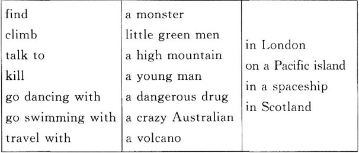
ACTIVITIES: While Reading
ACTIVITIES
While Reading
1．Read about EDI and then read Omega File 349. Are these sentences true (T) or false (F)? Rewrite the false ones with the correct information.
1) Johnny Cook went swimming nearly every day.
2) When they left the last club, Hawker and Jude took Johnny Cook to their house for dinner.
3) Johnny Cook wanted to sell a story about a drug company to a newspaper.
4) The company used homeless people for language tests.
5) Johnny Cook knew about this because he listened through the wall.
6) Hawker wanted to talk to Johnny Cook again.
7) Hawker and Jude couldn't talk to Johnny Cook again because he was in New York.
2．At the end of the story, Arla says 'Forget it,' so Hawker and Jude can't ask questions. What questions would you like them to ask Arla? Use these words to make some questions.
· Who... (be / with Johnny Cook / when / fall / river)?
· Who... (find / Johnny Cook's body / river)?
· Who... (you / telephone / when / we / go / coffee)?
· Who... (say / Johnny Cook's story / not / true)?
3．Read Omega File 451: Loch Ness, Scotland down to "Jude sat in the boat, with her gun in her hand." Choose the best question-word for these questions, and then answer them.
How / What
1) ... did people around the loch help Hawker and Jude?
2) ... did Hawker and Jude do every night?
3) ... did the men in grey want Hawker and Jude to do?
4) ... did the monster do nearly every night?
5) ... did Archie Campbell help Hawker and Jude?
4．Before you finish reading Omega File 451, can you guess how the story ends? Which of these endings do you like best? Tick all the ones you like.
1) The men in grey catch the monster and take it away before Hawker and Jude can see it.
2) Hawker and Jude catch the monster and take it to Arla.
3) The monster kills one of the men in grey.
4) Jude shoots the monster and kills it.
5) Hawker and Jude go to the army laboratory and find a lot more monsters there.
6) Arla phones and says, 'Come back to Brussels and forget the monster.' Hawker and Jude don't know why.
7) The monster is something made by the army.
8) The monster is something from another planet.
9) The monster really is Nessie, the Loch Ness monster.
5．Read Omega File 522: Galápagos, Ecuador down to "He said, 'They want us all to go away.'" Then match these halves of sentences to make five sentences.
1) Arla wanted Hawker and Jude to go to Isabela Island...
2) Dr Miller was very angry with everybody...
3) Hawker and Jude stared down into the crater...
4) In the night they listened to the radio...
5) They wanted Dr Miller to go with them to the boat,...
6) and heard the news about Volcano Alcedo erupting.
7) because he had strange emails about visitors there.
8) but Dr Miller did not believe the news on the radio.
9) but they could not see anything through the clouds of steam and dust down there.
10) because nobody believed his stories about the spaceship.
6．Before you finish reading Omega File 522, can you guess the answers to these questions?
1) Does Jim Miller go to the boat with Hawker and Jude?
2) Does the volcano erupt?
3) Do Hawker and Jude get to the boat before the volcano erupts?
4) Does anybody get killed?
5) Does Jim Miller leave the island in the spaceship?
6) Do Hawker and Jude both see the spaceship?
7) Is it possible that there really is a spaceship?
ACTIVITIES: After Reading
ACTIVITIES
After Reading
1．What did Jude say to Arla after the visit to Scotland? Put their conversation in the right order and write in the speakers' names. Arla speaks first (number 3).
1) ________ 'And the army is even more dangerous! I'm going to close their laboratory.'
2) ________ 'It can run all night, live under water, see in the dark, and it kills small animals with four legs.'
3) ________ 'Ok, Jude. Tell me about it. What was it?'
4) ________ 'No, of course he hasn't. This monster isn't very clever, Arla, but it's horrible—and dangerous. '
5) ________ 'Mm. Genetic engineering. And what can it do?'
6) ________ 'Good. Please do it soon, Arla !'
7) ________ 'It was one of the army's new fighters. It was a living thing—half animal, half person. '
8) ________ 'But why did it try to kill Hawker then? Hawker hasn't got four legs. '
2．Circle the best words to complete Hawker's email to Arla.
Before / When the volcano erupted, I saw a light / rock in the sky, moving down / up very fast. Jude says it was not / was a spaceship, but it moved more slowly / faster than the clouds of lava / dust. So what was it?
3．Use the clues below to complete this crossword with words from the story. Then find the hidden ten-letter word in the crossword. Is this word a place, a person, or an animal?
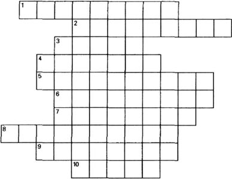
1) You can read the news in a ______ every day.
2) It is ______ to climb down into a volcano.
3) A company must do many ______ before they can sell a new medicine.
4) When a ______ erupts, lava and red-hot rock come out.
5) A special room for scientists to work in.
6) You can travel to planets and stars in a ______.
7) This animal moves very, very slowly.
8) When you look for something in the dark, you need a ______.
9) When you are ill, you take ______ to make you better.
10) A letter sent by computer.
The hidden word is_____，and it is_____.
4．Here is a new illustration for one of the stories. Find the best place for it, and answer these questions.
The picture goes in the story_____.
1) Where are Hawker and Jude?
2) What is the voice on the radio saying?
3) What do Hawker and Jude do next?
Now write a caption for the illustration.
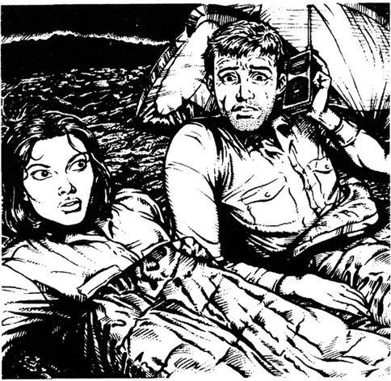
Caption:_________________________________
5．Here are some new titles for the three stories. Which titles go with which stories? Some titles are good (G); some titles are not good (NG). Can you explain why?
| Crazy Dr Miller | Hullo, Planet Earth! |
| Danger on the Streets | The Men in Grey |
| An Army for the Future | Drugs for the Homeless |
| A Nice Friendly Monster | Listening Through the Wall |
| Danger from the Sky | The Volcano Spaceship |
| Johnny | Danger in the Water |
6．Are the things in these stories possible? Perhaps not today, but perhaps in the future? What do you think? Tick some boxes in this table.
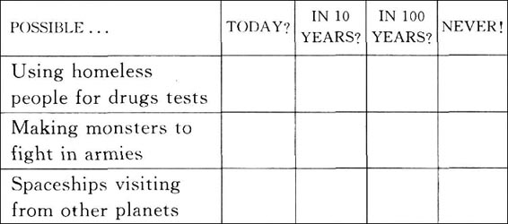
7．What did you think about these stories? Complete these sentences with your ideas.
1) I felt sorry for ______ when ______.
2) I didn't like it when _______.
3) I liked Omega File ________ best because ________.
封底
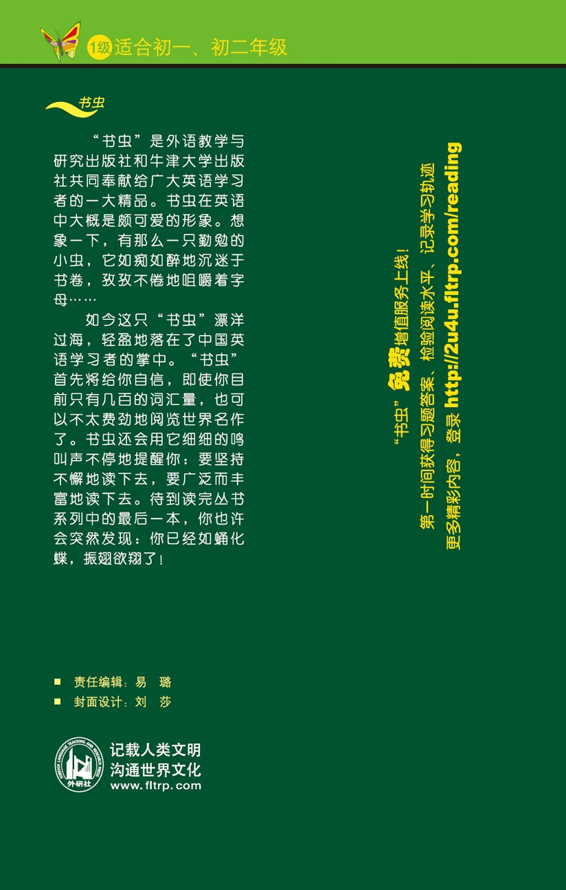